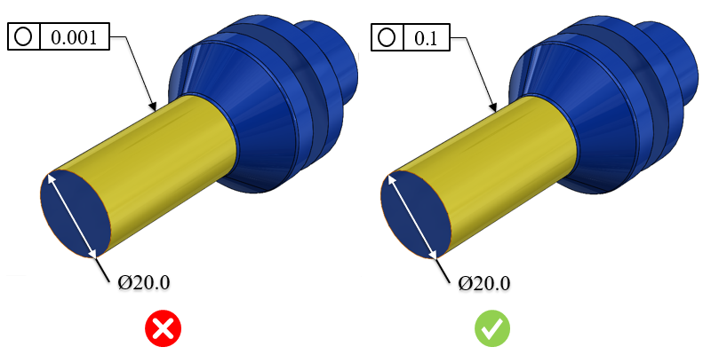

真円度記号は、対象物が真の円にどれだけ近いかを示すために使用されます。これは2次元の幾何公差であり、円全体の形状を制御し、過度に楕円形、角張り、または真円から外れていないことを保証します。いかなるデータムフィーチャにも依存せず、常に部品の直径寸法公差よりも小さく設定されます。回転軸やベアリングなど、完全に円形であることが求められる部品に一般的に使用されます。
3D CADで利用可能な幾何公差（GD&T）情報およびPMI情報を特定し、指定された値に対してより厳しい公差を検証します。
厳しい公差は、製品設計、製造、および検査時間に影響を与えます。公差が厳しくなることで、次の要素が追加され、最終製品コストが増加します。
高度または特殊な検査装置が必要
工具交換頻度の増加
最終部品受入における歩留まりの低下
スクラップ率の増加
原材料使用量の増加
過度に厳しい公差は、コストの増加と生産性の低下を招きます。適切な公差を持つ部品は、優れた嵌合性と機能を備え、製造効率も向上します。組立の場合、厳しい公差の部品は組立が困難となり、組立コストが増加します。
適切な公差を設定する際には、次の点を考慮する必要があります。
部品の機能に基づいて、重要公差と非重要公差を区別する
不要に厳しい公差を避ける
品質コストを最小化する
一般的な指針として、過度に厳しい公差はコスト増加と生産性低下につながります。公差値は、社内の加工および検査能力を考慮して設定する必要があります。
DFMProでは、公差タイプ、部品サイズ範囲、および対応する公差値を構成することができます。
部品外接サイズ = 部品の対角線長さのおおよその最大値
ここでは、
Lt = 長さ
Wt = 幅
Ht = 高さ
Ldt = 部品対角線長さ

注記：
CADモデルで指定された公差は、eDrawingsレポートには表示されません。
ルール構成で設定された公差値は、公差ゾーンとして扱われます。
このルールは、面やエッジなど、CADフィーチャに関連付け（参照）られている幾何公差のみを考慮します。
このルールは、幾何公差を持つパーツモデルに対して実行されます。